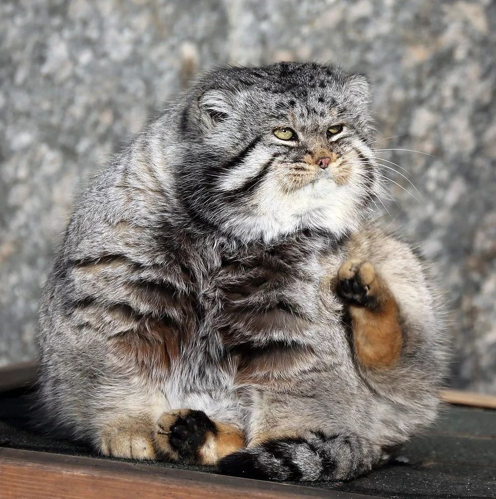

兔狲
兔狲（学名：Otocolobus manul）体形粗短，大小似家猫，体重2～3千克，栖息于沙漠、荒漠、草原或戈壁地区，能适应寒冷、贫瘠的环境，常单独栖居于岩石缝里或利用旱獭的洞穴，通路弯曲，深2米以上。夜行性，多在黄昏开始活动和猎食。视觉和听觉发达，遇危险时则迅速逃窜或隐蔽在临时的土洞中。腹部的长毛和绒毛具有很好的保暖作用，有利于长时间地伏卧在冻土地或雪地上，伺机捕猎。叫声似家猫，但较粗野。主要以鼠类为食，也吃野兔、鼠兔、沙鸡等。
分布于亚洲中部地带向东至西伯利亚。
2016年9月，新龙县环林局与猫盟CFCA共同启动了新阶段野外猫科动物调查工作。至2017年11月，调查并确认甘孜州新龙县分布有兔狲。
形态特征
兔狲体重2千克，体长50-65厘米。体形粗壮而短，大小似家猫。兔狲的额部较宽，吻部很短，瞳孔为淡绿色，收缩时呈圆形，但上下方有小的裂隙，呈圆纺锤形。耳短宽，耳尖圆钝，两耳距离较远，耳背为红灰色。全身被毛极密而软，绒毛丰厚，尤其是腹部的毛很长，为背毛长度的一倍多。背中线棕黑色，体后部有较多隐暗的黑色细横放，头部灰色，带有一些黑斑，眼内角白色，颊部有两个细黑纹，下颌黄白色，体腹面乳白色，颈下方和前肢之间浅褐色，四肢颜色较背部稍淡，亦有2、3条短而模糊的黑色横放，尾巴粗圆，长度约为20-30厘米，上面有明显的 6-8条黑色的环细纹，尾巴的尖端长毛为黑色。幼仔身上横纹显着，比较宽而长，尾上有6条纹。
有三个亚种，皮毛颜色不同。兔狲高原亚种背面沙黄色，背毛基部浅灰色，上部锈棕色，尖端黄白色；兔狲指名亚种背面青灰色，背毛基部浅灰色，毛尖黑褐。或头顶为灰色，具有少数黑色的斑点。颊部有2条细的横纹。身体的背面为浅红棕色、棕黄色或银灰色，全身被毛极密而软，绒毛丰厚如同毡子一般，尤其是腹部的毛很长，头顶为灰色，背部中线处色泽较深，常具有暗黑色泽，后部还有数条隐暗的黑色细横纹。或通体淡黄白色；颊部具两条细黑纹，下颏色白；腰及臀部有6-7条隐约可见的暗色横纹，尾部毛色与体背近似。
兔狲有几个特征和其他的猫科动物有所区分。它的脚短，臀部较肥重，且毛发也很长、很厚。这使得它看起来特别地矮胖且多毛。毛发会随着季节而改变，冬天时会较灰且较不花。它的耳朵位置较低，且其有一副貌似是猫头鹰的面容。 [1-3]
全部图片网址 [4]
栖息环境
栖息于灌丛草原、荒漠草原、荒漠与戈壁，亦能生活在林中、丘陵及山地。在上述生境的岩石缝隙或石洞居住，也可利用大型啮齿类（如旱獭）的弃洞作窝。栖居高度可达海拔4500米左右的山地。
生活习性
能适应寒冷、贫瘠的环境，常单独栖居于岩石缝里或利用旱獭的洞穴。巢穴通路弯曲，深度一般在2米以上。属夜行性动物，但晨昏活动频繁，多在黄昏开始活动和猎食。冬季食物缺乏时白天也出来觅食，或移居村落附近。视觉和听觉发达，遇危险时则迅速逃窜或隐蔽在临时的土洞中。腹部的长毛和绒毛具有很好的保暖作用，有利于长时间地伏卧在冻土地或雪地上，伺机捕猎。叫声似家猫，但较粗野。
主要以鼠类为食，也吃野兔、鼠兔、沙鸡等。以野禽、旱獭和各种鼠类为食。 [1-3]
分布范围
原产地：阿富汗，亚美尼亚，阿塞拜疆，中国（北京，内蒙古，宁夏，青海，甘肃，陕西，四川，西藏，新疆） [5] ，印度（查谟 - 克什米尔），伊朗伊斯兰共和国，哈萨克斯坦，吉尔吉斯斯坦，蒙古，巴基斯坦;（阿尔泰，布里亚特，赤塔，克拉斯诺亚尔斯克；存在不确定性：图瓦），俄罗斯联邦，塔吉克斯坦，土库曼斯坦，乌兹别克斯坦。
甘孜州新龙县 [6]
存在不确定性：不丹，尼泊尔。 [7]
繁殖方式
每年早春发情，夏初产崽，北方的兔狲繁殖期一般比南方地区的稍晚，繁殖期持续42天，雌性发情期26-42个小时。妊娠期9-10周，一般每胎三、四头，最多的一次可产6崽，小兔狲一般在4-5个月后，周身长满毛茸茸的灰色外套，并开始独立。人工豢养的兔狲寿命可达12年。 [2-3]
亚种分化
中文名称 |
拉丁学名 |
|
|---|---|---|
| 1. | 兔狲指名亚种 |
Otocolobus manul manul
|
| 2. | 兔狲西亚亚种 |
Otocolobus manul ferruginea
|
| 3. | 兔狲高原亚种 |
Otocolobus manul nigripecta
|
种群现状
兔狲在蒙古的无树木的大草原和俄罗斯与蒙古和中国交界的山区数量较多。在中国的西藏和西北地区也有健康种群存在。在其分布范围内尚未进行过种群现状调查，中国全国的种群数量难予估计；西藏现存数量约有2000-2500只。
乱捕滥杀是数量下降的主要原因。1950年代中国西部的年收购兔狲毛皮量达10000张。在西藏东部的一些重点分布县，在1970年代中、后期每县收购兔狲毛皮500-700张，但到了1980年代仅收购几十张，可说明其野生种群的数量正在逐年减少。由于兔狲的生活区是不适宜人类居住的地方，其生境的丧失并不是其数目减少的主要原因。 [9]
保护级别
- 列入《华盛顿公约》CITESⅡ级保护动物。
- 列入《世界自然保护联盟》（IUCN） ver 3.1 2008年——近危（NT）。 [7]
- 列入1988年中国《国家重点保护野生动物名录》定为Ⅱ级保护动物。 [2]